Mallorca, Spain
Finally visiting Mallorca! The largest island in the Balearic Sea, Mallorca is a beachgoer’s dream, home to a craggy coastline riddled with more than 200 picturesque calas (small inlets) and beaches. Couple that with the storybook villages, picturesque waterfronts, fresh seafood, delicious tapas, cliff jumping and hiking, and you have one of the most sought-after summer destinations in Europe. Below is my complete guide to the island including the best beaches, sights, hotels, Airbnb rentals, restaurants.
How many days in Mallorca?
Eight to ten days. Mallorca might be an island, but it’s a massive island. And while more than a week is a lot of time to dedicate to any destination, I’d say it’s the minimum you need to get a good taste of Mallorca. There are more than 200 beaches and calas scattered along the picturesque coastline, as well as villages, hikes and historical sights to discover.
Everything on the Mallorca is reachable by car, but driving distances are long. And while a one hour drive to reach an epic beach might sound reasonable on paper, it becomes pretty draining to do this several days in a row. With 10 days on the island, you can alternate the road trip days. It makes a big difference!


When to visit Mallorca?
- JUNE & SEPTEMBER - Mallorca has become quite popular in recent years. And while it’s hard to escape the summer crowds, June and September offer the best balance of warm weather, hotel selection and hotel prices. And it’ll be slightly less busy than July and August.
- JULY & AUGUST - July and August temps can be unbearably hot, and summer crowds peak this time of the year.
- APRIL, MAY & OCTOBER - Lodging pricing is reasonable during shoulder season, but the island is not fully open in April, May and late October. Weather can be hit and miss, and likely too cold for beach days in April.
- NOVEMBER TO MARCH - Avoid visiting this time of the year. The weather is cold with chances of rain.
Get around Mallorca
A car is a must on Mallorca. The driving distances are long. For example, it’s more than an hour on the road to get from the village of Valldemossa to Cala Llombards. Everywhere you’re gonna want to visit is just easier to reach with a car. All the major car brands have rental counters at the airport. I rented from Avis and Hertz, and both were great.
Get to Mallorca
The Palma de Mallorca Airport connects Mallorca to domestic destinations within Spain, as well as dozens of cities throughout the Americas, Europe and the Middle East. The abundance of budget airline flights make Mallorca a quick, affordable weekend escape for most Europeans. For Americans, the easiest route is via the United Airlines direct flight that connects Newark to Palma.

 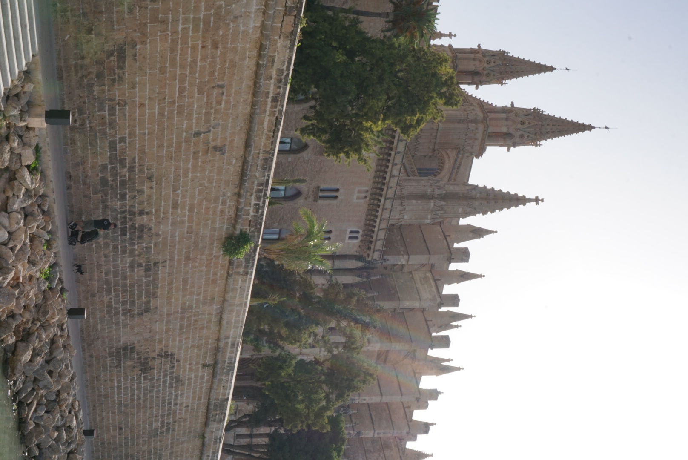
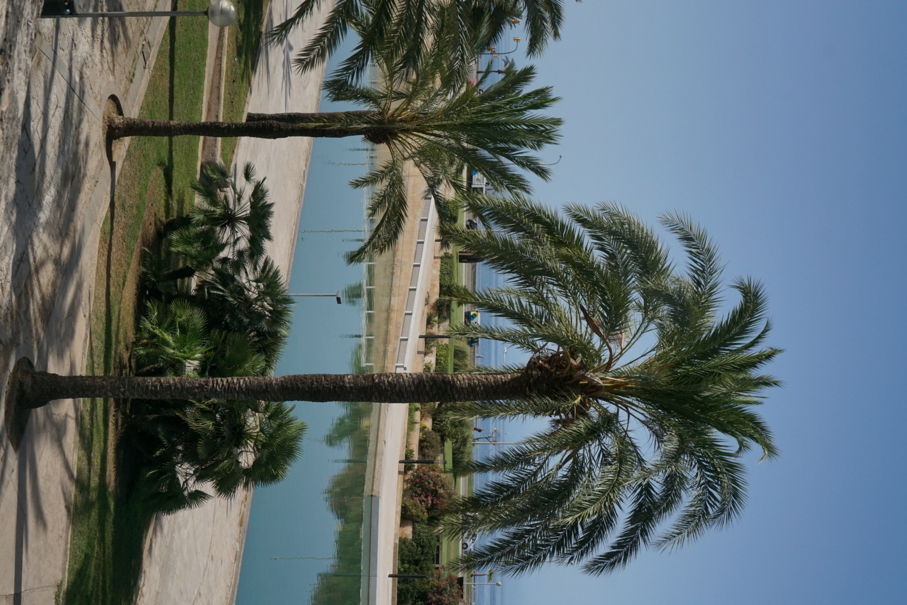
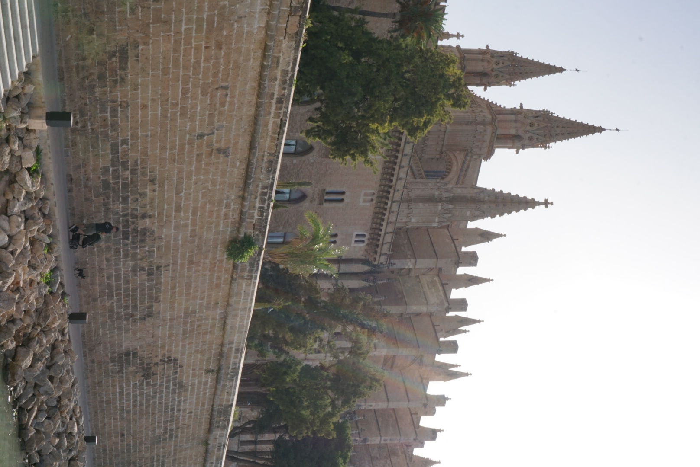
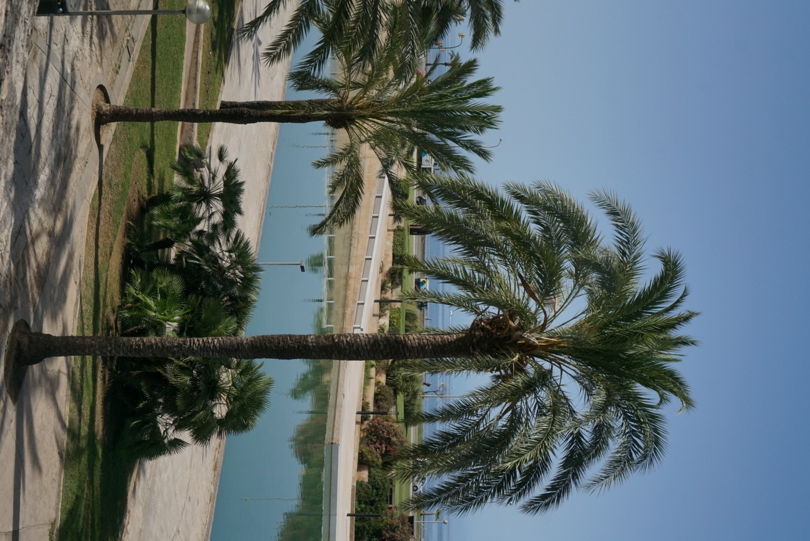
Explore Mallorca
ALCUDIA OLD TOWN
This lovely Old Town in north Mallorca is a beautiful place to spend a couple of hours exploring. The historic town centre is walkable. Highlights include the Porta de Moll, St. Debastian’s Gate and medieval walls.
DEIA
Deia is part of a cluster of storybook villages on the island’s west coast. It’s small, and not a lot going on, but perfectly serene to visit in the evening, especially if you have a dinner reservation at El Olivio, Restaurant Nama or Restaurante Miro. Wander through the village and you’ll find a handful of boutiques, restaurants and a church perched on the village hilltop.
FORNALUTX
Another charming cluster of stone houses, cobbled lanes and potted plants, Fornalutx is a mountain village that sits trapped in the Serra de Tramuntana. The fairytale setting is filled with the tapas restaurants, shops, a church and market square.
PALMA CATHEDRAL
This stunning 14th century Gothic Roman cathedral sits in the heart of Palma, towering over Old Town and the Bay of Palma. The best photo location to capture the entire church is from across the lagoon, along the stone ledge.
PORT DE SOLLER
Bustling waterfront filled with sailboats and yachts that feels quintessential Europe on warm summer evening. The waterfront is lined with tapas bars, seafood restaurants, cafes, gelato, shops and beach clubs. A great place to stay on the island if you can find a place.

 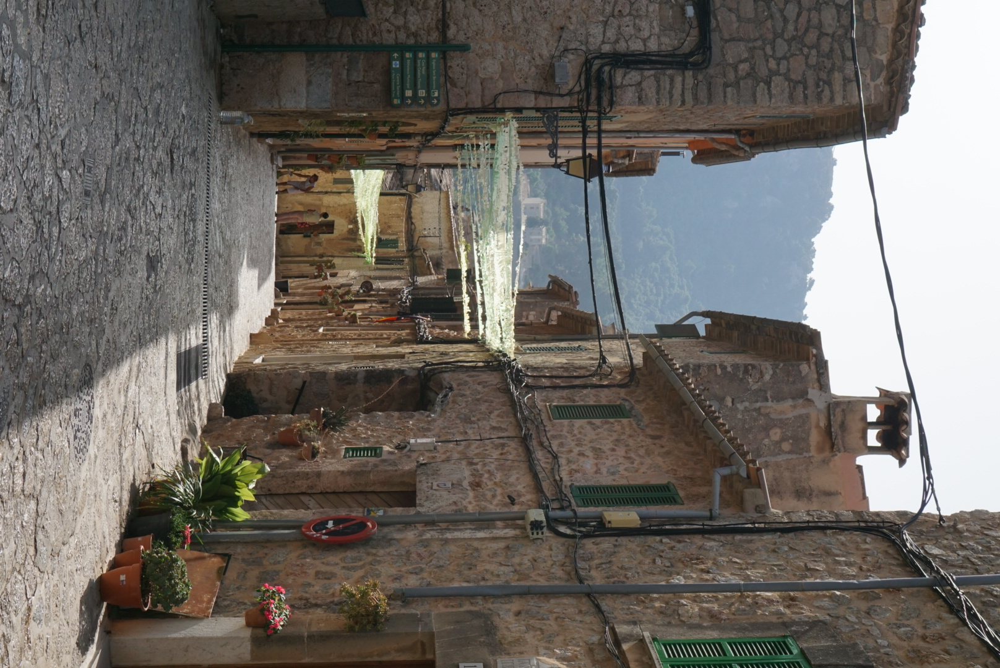
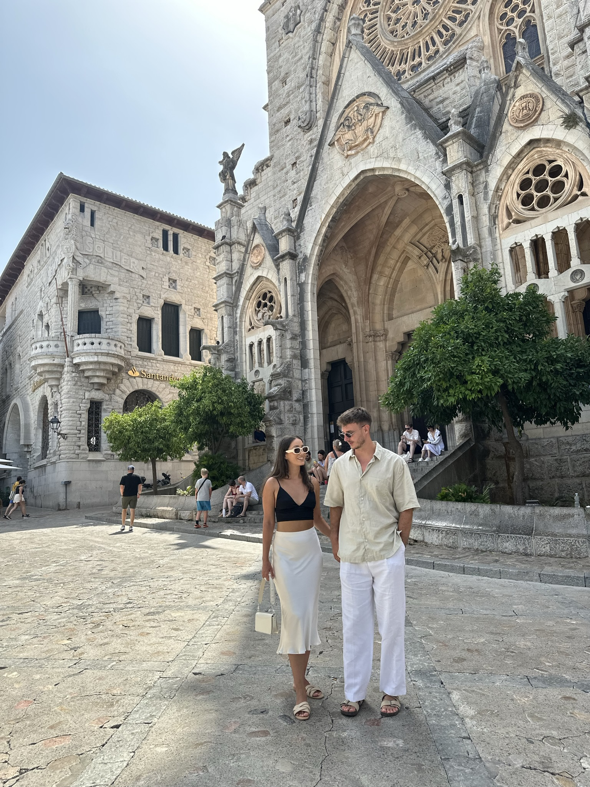
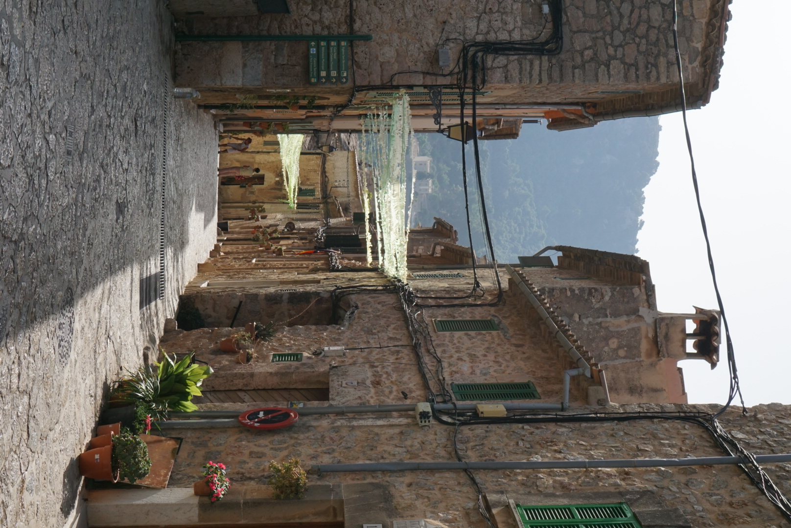
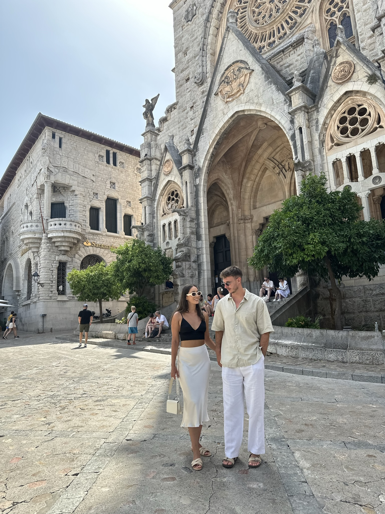
BELLVER CASTLE
Bellver is a beautiful Gothic castle that sits perched on a hilltop overlooking Palma. It boasts a rare circular shape, and dates back to the 14th century.
DRACH CAVES
Popular tourist attraction in Porto Cristo, home to four interconnected caves riddled with stalactites and stalagmites, as well as an underground lake, Lake Martel. Visitors can explore Black Cave, White Cave, Cave of Luis Salvador and Cave of the French on foot. It typically takes about an hour.
MIRADOR COLL DE REIS
On the drive to Sa Calobra Beach, stop at Mirador Coll de Reis for epic views of the ultra curvy Sa Calobra Road that winds down to the waterfront below.
VALLDEMOSSA
Possibly the prettiest village on Mallorca. Similar to Deia, Valldemossa is built up a hilltop, but it’s a bit more bustling with a variety of boutiques, cafes, shops and restaurants. Spend an afternoon navigating the maze of cobbled lanes lined with the most potted plants and flowers you’ve ever seen.
SOLLER
Soller is home to a lovely village square surrounded by a gorgeous church, al fresco dining, gelato and little boutiques. There is a historic tram that connects Soller to Port de Soller, a fun way to travel between the two villages.

 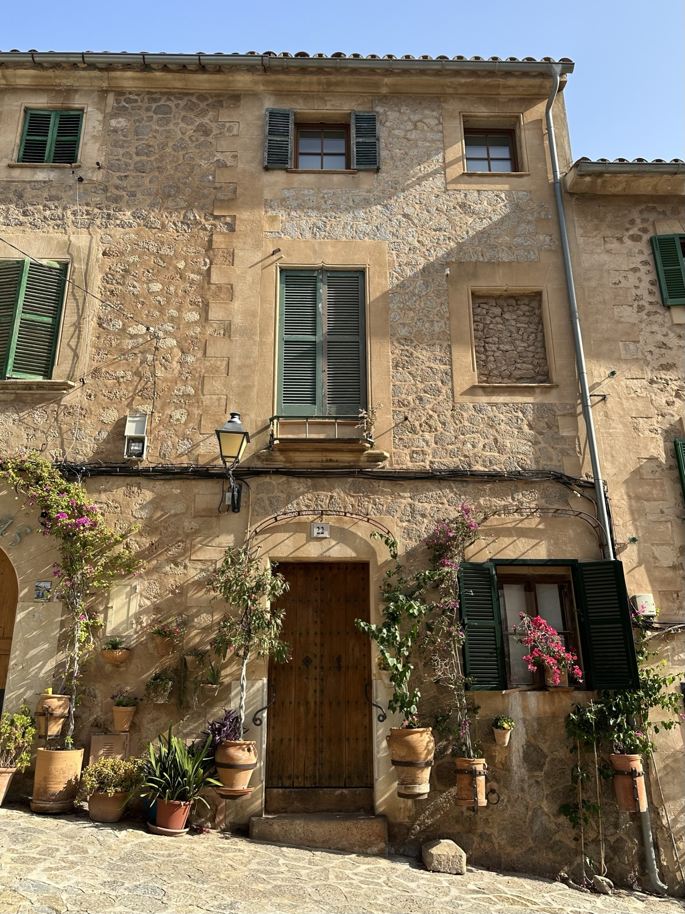
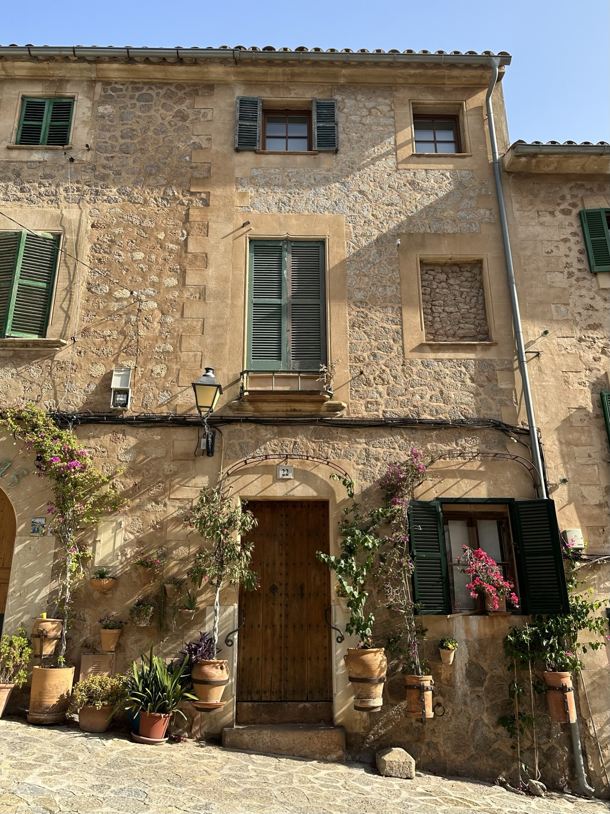
Where to stay?
BELMOND LA RESIDENCIA
The most famous luxury hotel on the island, the Belmond La Residencia occupies an entire hillside overlooking the picturesque village of Deia. The location on the island is ideal – Valldemossa, Cala Deia, Port de Soller and even Sa Calobra are an easy drive. And the property is stunning, boasting more than 70 rooms, suites and villas, several with views of the mountains and private swimming pools.
CAP ROCAT
For over-the-top luxury, Cap Rocat occupies a remote stretch of coastline 30-minutes south of Palma. Once a 19th century military fortress, the property is now an opulent five-star resort. The rooms and suites open up to views of the Balearic Sea, some terraces with sea-facing plunge pools. There is a private beach, spa, cinema and two on-site restaurants.
JUMEIRAH PORT SOLLER HOTEL & SPA
Perched high atop Port de Soller with breathtaking views of the Balearic Sea is the Jumeirah Port Soller. It’s one of the more expensive properties on the island, home to more than 100 gorgeous rooms, suites and villas. At check-in guests are greeted with fresh squeezed orange juice and a pair of flannel pajamas. There are several on-site restaurants and bars, a spa and a variety of pool options for guests.
VILLA SA TORRE
Port de Soller is my favorite area to stay on Mallorca. I love the waterfront atmosphere, as well as having dining options and the beach in such close proximity. If you’re traveling with a group, Villa Sa Torre is the best option in town. The four-bedroom, three-story house sits facing the waterfront, and it’s a mere a one-minute walk to the parking lot. It’s one of the oldest homes in Port de Soller, but it’s been completely renovated, while still retaining a lot of the old world character.

 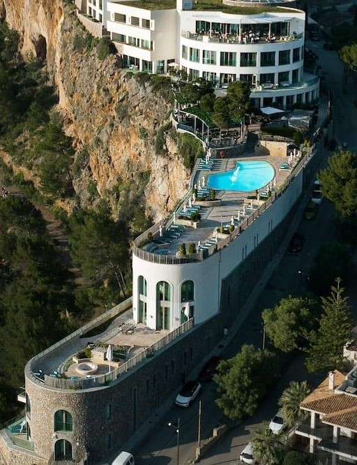
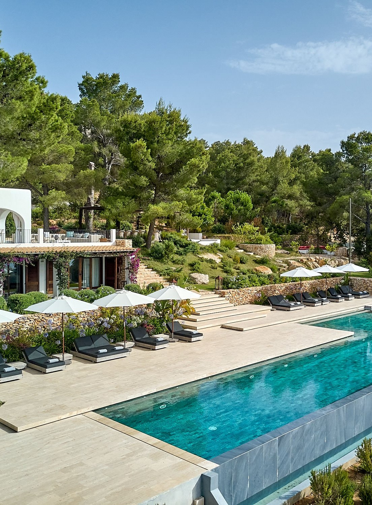
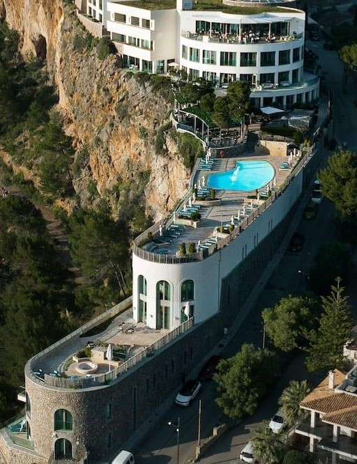
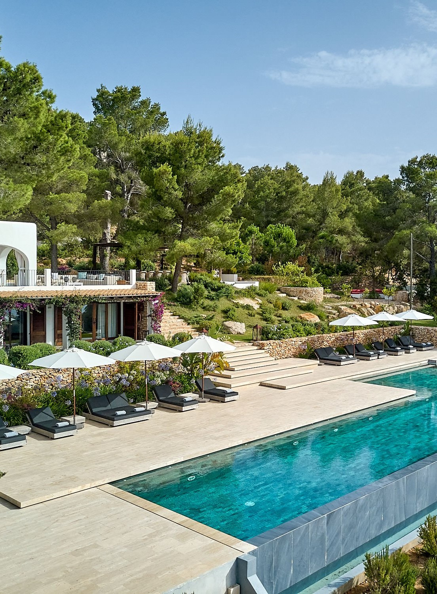
Where to eat?
CA’S PATRO MARCH
The best restaurant view on the island is from Ca’s Patro March, perched above the stunning blue waters of Cala Deia. The menu is filled with fresh, delicious seafood options. Reservations are a must – this place books out months in advance. If you don’t have a reservation, arrive when the restaurant opens and put your name down in case there are any no-shows.
CASSAI GRAN CAFE
Tucked away on the streets of San Salinas is one of the most beautiful restaurants on Mallorca complete with boho vibes, sage greens, foliage, rustic wood, airy ceilings and lots of light. While the space is stunning (fit for an Instagram feed), the food is mediocre and service is a bit slow.
EL OLIVIO
El Olivio sits perched over the village of Deia, offering up the most serene setting for dinner at Golden Hour. The restaurant is fine dining with a minimum per person spend, located on the Belmond’s La Residencia property. Reservations highy recommended months in advance.
RESTAURANTE MIRO
If El Olivio is booked up, then it’s neighbor Restaurante Miro is a perfectly fine alternative. It’s the sister restaurant that’s also located at Belmond La Residencia. The view is a little different, but it’s the same serene outdoor ambiance of Deia, and the menu is filled with delicious, fresh options including seafood, pastas and salads.
TRIPLE
A lovely restaurant located in San Salinas, fully decored with teedy bears. The food is amazing, totally recommand it.

 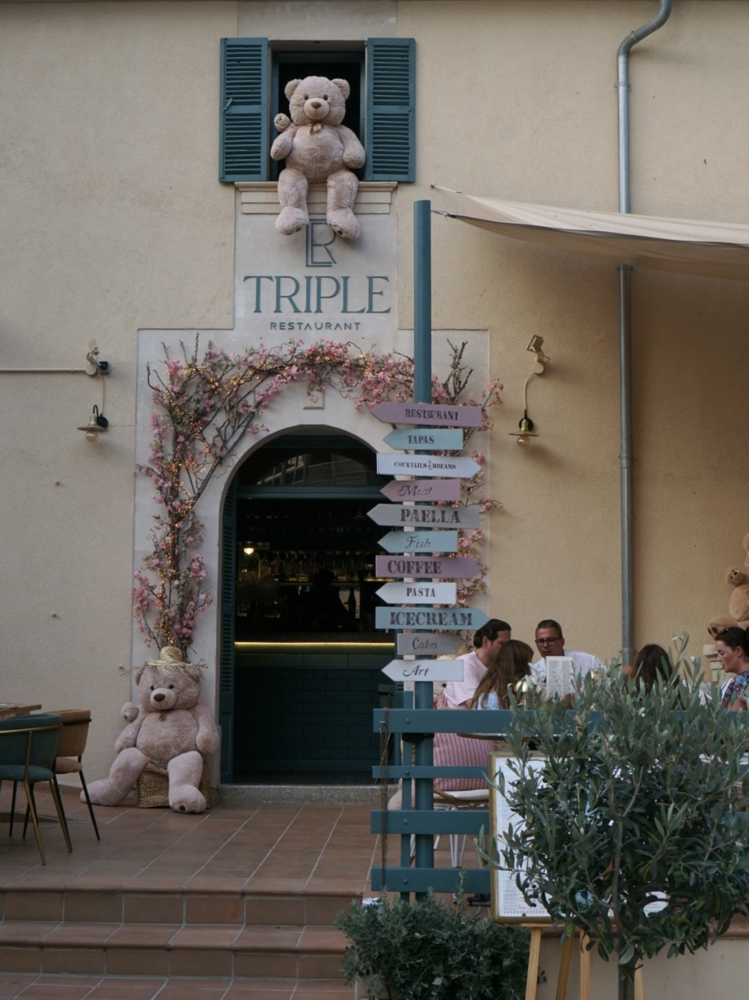
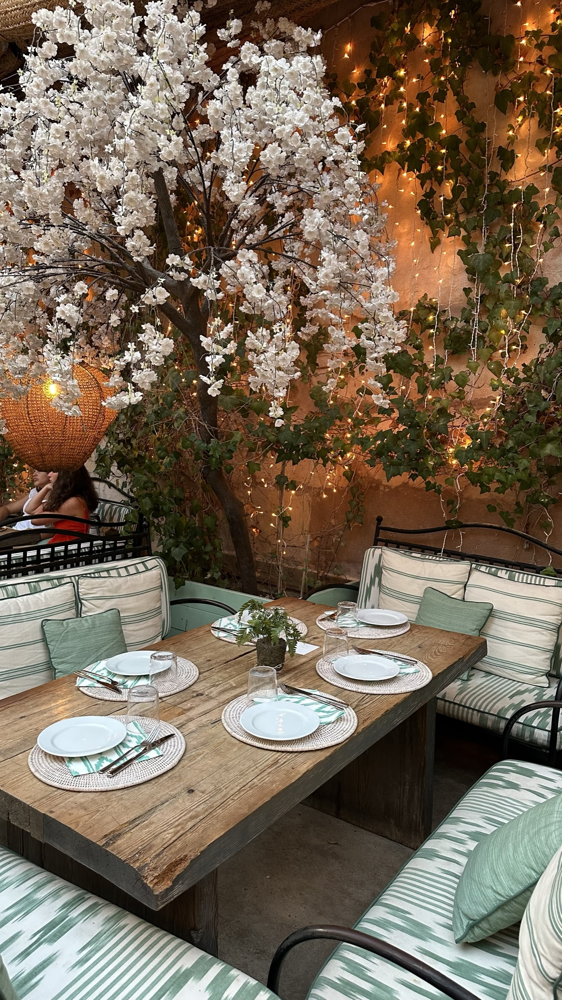
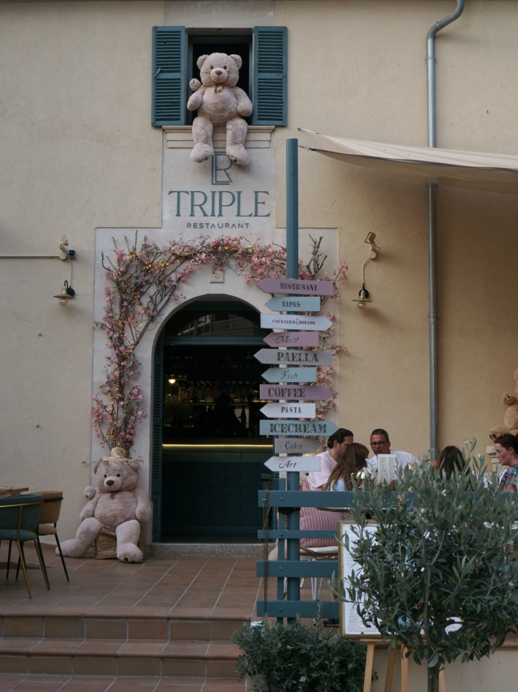
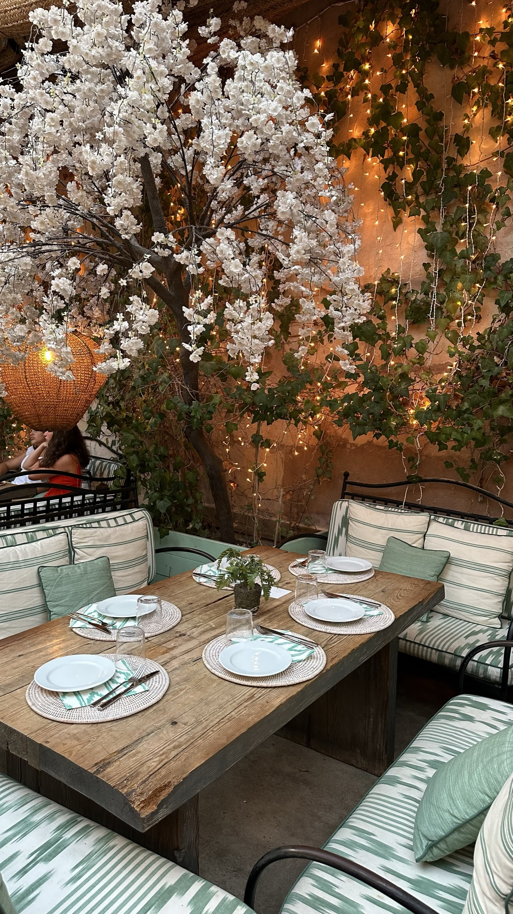
More from MALLORCA ...

 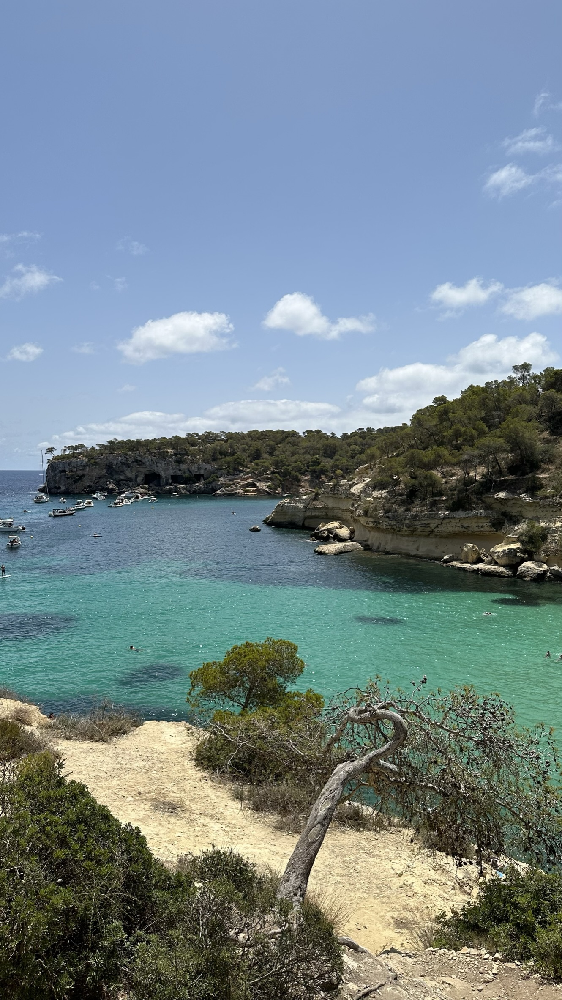
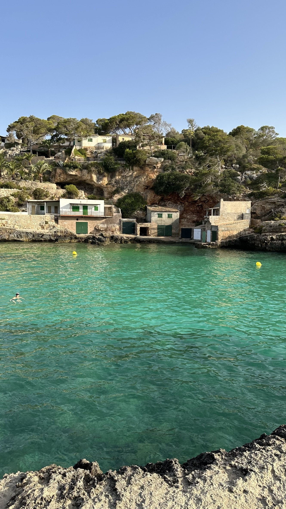
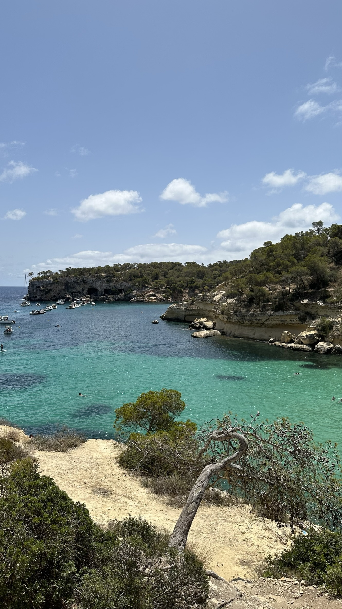
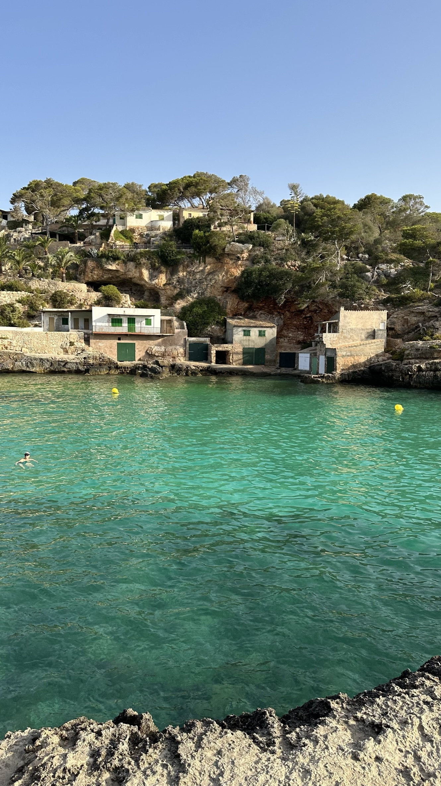